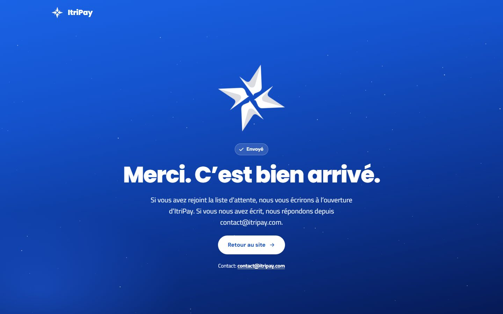

<title>ItriPay Phase B Screens</title>
<meta name="claude:viewport-fit-sides" content="cover">
<link rel="preconnect" href="https://fonts.googleapis.com">
<link rel="preconnect" href="https://fonts.gstatic.com" crossorigin>
<link rel="stylesheet" href="https://fonts.googleapis.com/css2?family=Poppins:wght@800&family=DM+Sans:wght@500;700&family=Cairo:wght@400;700&display=swap">
<style>
/* Layout: one row per page section — the desktop capture wide on the left, the phone capture beside it. */
:root{
  --bg:#F1F5FE; --panel:#FFFFFF; --ink:#0A1433; --body:#46526F; --line:#D3DEF6; --accent:#1452CC; --accent-ink:#FFFFFF; --sky:#0D389A;
  --f-head:'Poppins','Cairo',system-ui,sans-serif; --f-ui:'DM Sans','Cairo',system-ui,sans-serif;
}
@media (prefers-color-scheme:dark){:root:not([data-theme="light"]){--bg:#061A55;--panel:#0B2470;--ink:#F1F5FE;--body:#C9D8FA;--line:#1E3A8A;--accent:#A9C4FF;--accent-ink:#061A55;--sky:#020A22;color-scheme:dark}}
:root[data-theme="dark"]{--bg:#061A55;--panel:#0B2470;--ink:#F1F5FE;--body:#C9D8FA;--line:#1E3A8A;--accent:#A9C4FF;--accent-ink:#061A55;--sky:#020A22;color-scheme:dark}
body{background:var(--bg);color:var(--body);font-family:var(--f-ui);font-size:15px;line-height:1.55}
.wrap{max-width:1320px;margin-inline:auto;padding-left:max(16px,env(safe-area-inset-left,0px));padding-right:max(16px,env(safe-area-inset-right,0px))}
header.top{padding-block:40px 24px;display:grid;gap:10px}
h1{font-family:var(--f-head);font-weight:800;font-size:clamp(28px,4vw,44px);line-height:1.1;letter-spacing:-.02em;color:var(--ink);margin:0;text-wrap:balance}
.lede{max-width:70ch;margin:0}
.bar{position:sticky;top:env(safe-area-inset-top,0px);z-index:5;background:var(--bg);border-bottom:1px solid var(--line)}
.bar .wrap{display:flex;flex-wrap:wrap;gap:8px 18px;align-items:center;padding-block:12px}
.seg{display:inline-flex;gap:4px;padding:4px;border-radius:999px;background:var(--panel);box-shadow:inset 0 0 0 1px var(--line)}
.seg a{min-height:36px;display:grid;place-items:center;padding:0 16px;border-radius:999px;font-weight:700;color:var(--body);text-decoration:none}
.seg a[aria-current]{background:var(--accent);color:var(--accent-ink)}
.seg a:focus-visible{outline:3px solid var(--accent);outline-offset:2px}
.jump{display:flex;flex-wrap:wrap;gap:4px 14px;font-size:14px}
.jump a{color:var(--accent);font-weight:700;text-decoration:none}
main{display:grid;gap:36px;padding-block:28px 64px}
section.row{display:grid;gap:12px;scroll-margin-top:72px}
.row h2{font-family:var(--f-ui);font-weight:700;font-size:13px;letter-spacing:.12em;text-transform:uppercase;color:var(--accent);margin:0;display:flex;gap:10px;align-items:baseline}
.row h2 small{font-weight:500;letter-spacing:0;text-transform:none;color:var(--body);font-size:13px}
.pair{display:grid;grid-template-columns:minmax(0,1fr) minmax(0,300px);gap:16px;align-items:start}
.pair.three{grid-template-columns:repeat(3,minmax(0,1fr))}
figure{margin:0;display:grid;gap:6px;min-width:0}
figure img{display:block;width:100%;height:auto;border-radius:10px;box-shadow:0 0 0 1px var(--line),0 18px 40px -28px rgba(6,26,85,.6);background:var(--panel)}
figcaption{font-size:12.5px;color:var(--body)}
.threads{display:grid;grid-template-columns:repeat(auto-fill,minmax(260px,1fr));gap:16px}
@media (max-width:760px){.pair,.pair.three{grid-template-columns:1fr}.pair figure.phone{max-width:300px}}
</style>

<header class="top wrap">
  <h1>ItriPay — the built site, section by section</h1>
  <p class="lede">Every section of <code>/en/</code> and <code>/ar/</code> as built from <code>src/</code> on branch <code>redesign-c</code>, captured in headless Edge at 1440×900 (desktop) and 390×844 (phone), each after scrolling to it so its reveal has run. Motion was live, so the star and the carnet show whatever moment they were in. Sections that fit one screen show the fixed blue header on top, as a visitor sees it; taller ones (most phone captures) are taken as one long image without it.</p>
</header>

<nav class="bar" aria-label="Choose language and section"><div class="wrap">
  <div class="seg" role="group" aria-label="Language"><a href="#en" data-lang="en" aria-current="true">English</a><a href="#ar" data-lang="ar">العربية</a></div>
  <div class="jump" id="jump"></div>
</div></nav>

<main class="wrap" id="rows"></main>

<script>
(function () {
  var S = [['01-top','Hero'],['02-problem','Problem'],['03-how','How it works'],['04-features','Features'],['05-credit','Credit carnet'],['06-who','Who it is for'],
           ['07-pricing','Premium'],['08-partners','Partners'],['09-name','The name'],['10-faq','FAQ'],['11-join','Waitlist and contact form'],['12-site-foot','Footer']];
  var rows = document.getElementById('rows'), jump = document.getElementById('jump');
  function render(lang) {
    var L = lang === 'ar' ? 'Arabic, right to left' : 'English';
    var h = S.map(function (s) {
      return '<section class="row" id="s-' + s[0] + '"><h2>' + s[1] + ' <small>' + L + '</small></h2><div class="pair">' +
        '<figure><figcaption>Desktop, 1440 × 900</figcaption></figure>' +
        '<figure class="phone"><figcaption>Phone, 390 × 844</figcaption></figure></div></section>';
    }).join('');
    h += '<section class="row" id="s-sent"><h2>Sent page <small>where the form lands without JavaScript</small></h2><div class="pair">' +
      '<figure><figcaption>Desktop</figcaption></figure>' +
      '<figure class="phone"><figcaption>Phone</figcaption></figure></div>' +
      (lang === 'en' ? '<div class="pair three"><figure><figcaption>French, desktop</figcaption></figure><figure class="phone"><figcaption>French, phone</figcaption></figure></div>' : '') + '</section>';
    h += '<section class="row" id="s-threads"><h2>Waitlist threads <small>the cursor 70 px below each waitlist button</small></h2><div class="threads">' +
      [['header','Header'],['hero','Hero, white on the sky'],['premium','Premium, gold'],['form','Form, blue on a light section']].map(function (t) {
        return '<figure><figcaption>' + t[1] + '</figcaption></figure>';
      }).join('') + '</div></section>';
    rows.innerHTML = h;
    rows.dir = 'ltr';
    jump.innerHTML = S.map(function (s) { return '<a href="#' + lang + '" data-go="s-' + s[0] + '">' + s[1] + '</a>'; }).join('') + '<a href="#' + lang + '" data-go="s-sent">Sent</a><a href="#' + lang + '" data-go="s-threads">Threads</a>';
    document.querySelectorAll('[data-lang]').forEach(function (a) { if (a.dataset.lang === lang) a.setAttribute('aria-current', 'true'); else a.removeAttribute('aria-current'); });
  }
  function fromHash() { render(location.hash === '#ar' ? 'ar' : 'en'); }
  window.addEventListener('hashchange', fromHash);
  jump.addEventListener('click', function (e) {
    var a = e.target.closest('[data-go]'); if (!a) return;
    e.preventDefault(); document.getElementById(a.dataset.go).scrollIntoView({ behavior: matchMedia('(prefers-reduced-motion: reduce)').matches ? 'auto' : 'smooth' });
  });
  fromHash();
})();
</script>
